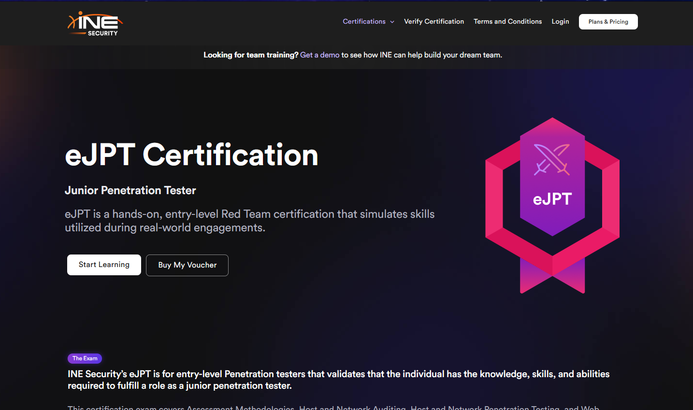
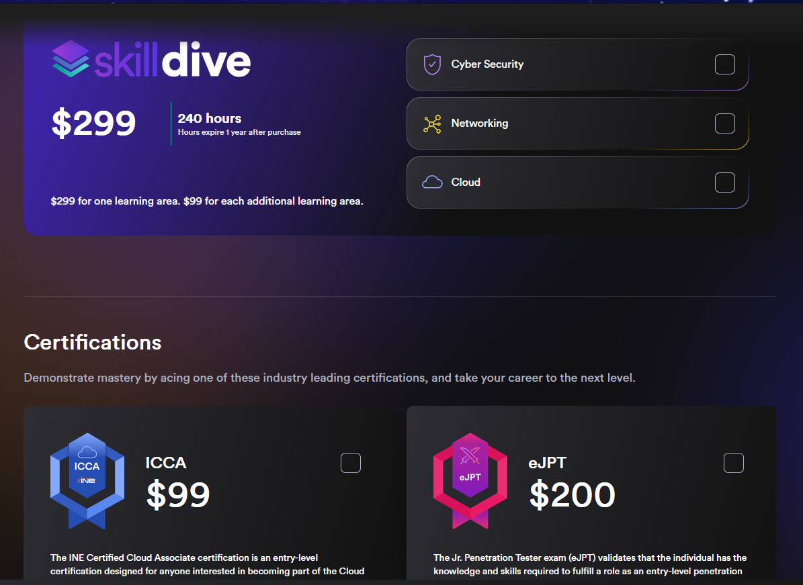

INE's Ejpt 👩💻
Info and Pricing
So for starters, the Ejpt is an up and coming CERT in the industry. I think that there is something to say for exams that are "hands on".
This exam is absolutely perfect in my opinion for anyone who has been in the industry for maybe a short period of time and really wants to test their ability. It is no secret that the dreaded imposter syndrome haunts many professionals in the community and by taking exams such as this one, I believe it helps to put those types of negative emotions to rest.
INE has worked to develop a v2 edition of this exam which is now just labeled as the Ejpt. The exam itself is open book, and is not proctored. The student has 48 hours to complete the exam which in my opinion is ample time.
Let's take a look at pricing:
The exam voucher can be purchased for a flat 200 bucks. This is incredibly reasonable and if you have any inclination whatsoever that you need more training before entering the exam then you can pay $299 and purchase the "Skill Dive" package which includes additional training to prepare for the exam. This option at the time of writing this post also includes an additional exam voucher in the event you go "whoops" on the first take.
The Exam
You may see this time and time again while researching this CERT, people say that you can't approach this exam like a CTF... I couldn't agree more. This exam is a pentest, a true blue pentest. As you start the exam, you are provided a box that can be accessed within a browser and you are in a network. You must find all of the active hosts, you must enumerate them, and you must exploit each and every one. The reason you cannot approach this exam as a CTF is for this reason.
If you attack each question as an individual question itself then you will consume your time going down unnecessary rabbit holes. You MUST approach the exam as a pentest and document as you go. I cannot stress this enough! I noticed that the exam will circle back to machines that it touched on previously. For example, my number 2 question was related to a web application that I exploited and the exam didn't touch on that machine again until question 34...
Catch my drift?
It all boils down to documentation. If you are currently a pentester, you know the importance of this and you should follow suit for this exam.
Grading Schema
I know this exam was surrounded by its fair share of controversy. After doing any kind of research on this exam, you will come across individuals who scored a 94 or an 88 and still managed to fail the exam even though a 70% is all that is required to pass. Let me explain, the exam is graded overall by grading the performance level of individual topics such as privilege escalation, web application exploitation, etc.
Without getting too deep into the weeds and the math of the grading system, just know this... If you walk into the exam prepared to conduct a pentest, and you know what you are doing and you have already been successful as a pentester then you are going to pass this exam and pass it with flying colors.
INE gives you 48 hours to complete the exam. I totally expected the exam to take much longer than it actually did. I finished the exam in 6 hours and that time included eating dinner with my family. There is plenty of time to take the exam.
If I had to say there was any downside to the exam at all I would say it is the fact that you cannot download or use any additional tools other than the ones that are provided. This isn't a huge deal but for example, if you want to use gobuster and ffuf is the only directory discovering tool you have then you are just left with that option. Not a big deal, but something to be aware of. Absolutely every tool you will need to complete the exam is available.
I 10 out of 10 recommend this CERT and I promise you will have a blast taking it!